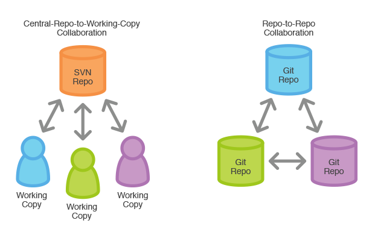

GIt 4 us
En propia experiencia
Created by Gaston Nina / @gastonnina

Que es Git?
https://www.youtube.com/watch?v=z_FN1NvneBw
como explico Git?
DRY
"Don't Repeat Yourself"
KISS
Keep It Simple, Stupid!!!
Keep It Sort and Simple


README.md
Documento Principal de explicación de repositorio. Notaciones al author, parametros de instalacion, documentos.
# AOPEB
Proyecto de Certificacioón AgrÃcola que tiene la caracteristica especial de sincronizar bases de datos.
### Versión
4.0
###Equipo
* Gaston Nina - Desarrollador - (1ra,2da,3ra fase)
* Carmen Menezes - Desarrollador (1ra fase)
* Luis Villasante - Diseñador (1ra Fase)
* Jhenrry Alvarado - Desarrollador (3ra fase)
* Nestor - Desarrollador (2da fase)
###Contactos Cliente
- Gary Ticona - sistemas (actual encargado sistemas)
- Arturo Miranda - sistemas (1ra, 2da, 3ra fase)
- Lourdes - Agronoma - (1ra,2da fase)
### Tecnologias
las tecnologias usadas hasta la tercera fase son:
* symfony 1.2 - Framework php actualmente deprecated (backend)
* WSP - Framework desarrollado por enbolivia.com deprecated (frontned)
* PHP - Lenguaje de programacin de lado servidor
* MYSQL - Base de datos
* SVN - Repositorio base
### Instalación
cree una carpeta nueva y hubiquese dentro de ella, que tenga permisos 777:
```sh
$ git clone [git-repo-url] .
```
Comandos de Symfony2 1.2
Una vez modificando el archivo schema.yml
```sh
$ php symfony propel:build-model
$ php symfony propel:build-forms
$ php symfony propel:build-filters
// Crea un abm der un modulos
$ php symfony propel:generate-admin backend StMdRubro --module=rubro
```
### Planeado 4ta fase
Se resaltan las mas significativas
1. (X) Rediseño RWD frontend usando wordpress.
2. (X) Nuevas estadisticas en frontend que tenga exprtar tambien a pdf.
3. (X) Mantenimiento de funcionalidades backend.
CHANGELOG.md
Documento formato plano que explica que se aplica en cada nueva version características
# Change Log
Todos los cambios notables al sistema estas descritos en este documento
## [4.0] - 2015-02-28
### Installed
Version que necesita version 4.0 de base de datos
### Changed
- Adiciono exportado a csv envez de excel
- Adiciono Rubros para los productos
- Se muestra mapa por municipios
### Removed
- Se quito wsp como frontend
[4.0]: https://github.com/olivierlacan/keep-a-changelog/compare/v0.0.7...v0.0.8
.gitignore
porque no todo merece ser versionado?
https://www.gitignore.io/
SVN vs GIT
Comandos
http://rogerdudler.github.io/git-guide/presentacion
https://dbrgn.ch/slides/20130207_getting_git/
Documentación
https://www.youtube.com/playlist?list=PLo4CW_btA6oZTT2WGK4tgnGvr71cQAS0s http://rogerdudler.github.io/git-guide/index.es.html http://git-scm.com/doc
Ramas
http://nvie.com/posts/a-successful-git-branching-model/ https://www.atlassian.com/git/tutorials/comparing-workflows/gitflow-workflow http://git-scm.com/book/en/v2/Git-Branching-Branches-in-a-NutshellGit desde la experiencia de otros
https://morganestes.com/slides/opinionated-git-workflows/632/presentacion
https://dbrgn.ch/slides/20130207_getting_git/presentacion 2
http://joariasl.github.io/git-presentation/#/Git desde la experiencia de otros
https://morganestes.com/slides/opinionated-git-workflows/632/prezi
link 1link 2
link 3
link 4